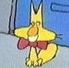

Uh, I don't know where I am right now, what you would call it. Officially, I'm two papers away from cramming for finals, but that really doesn't mean much. Papers...I hate them, they are horrible, and as they have driven me before, I find myself again living in the wee hours of the morning, transversing worlds which I think I would otherwise never dwell upon. Does that make any sense? It basically means, until maybe Thursday or Friday, I won't be getting any normal semblance of sleep.
I did the last Lambda meeting today, and I tried my best. I think I'll go on record, at least one more time, that Aiman is a complete idiot. I'm tempted to elaborate, but I probably shouldn't. I'll just say hypocrites are wasting perfectly good air. Other than idiocy-related annoyances, I think everything went well. Annette Hatton doesn't know my name. Despite everything I've done, my presense on the listserv and in the Office, she has neglected to even learn my name. She says, "I'd like to thank this year's Board, Stefanie, Kyle, Aiman, ...er, Eric, ... and, everyone else..." What a major bitch. I'm happy to have contributed to her eventual disappearance from the Lambda listserv. Sic 'er Matt. Nobody reads those e-mails anyways.
I came home and watched some of my Look Who's Talking Too DVD. That was sleep enducing...I napped until around 11:30, and have since tooled around and read for my paper. I plan to write a draft before 8:30, talk to my teacher about my work on the paper and in the course, and then basically muddle through 3 hours of classes. After that, I'm going to have to hole myself up in the SLC to read for another paper that is due TOMORROW. After attending the SOAR awards from 4 to 5 p.m., I'm going home to work on said paper and hopefully catch some Z's at a decent hour. I think I may opt out of Matt's appointment tomorrow so I can heavily revise my paper, print the sucka, and hand it in around 1:25 tomorrow. After that, I'll brush up on the draft I'm about to tweak out, and then I'm through. No more papers.
I have three finals. I know that I have one on Tuesday and then another on Friday--my Shakespeare final has yet to be scheduled, or if it has, this information has yet to be forwarded to me. After my final Friday, I will be very anxiously preparing for a trip to Ohio to see my mother, who I haven't seen since last summer, and *crosses my fingers* recieve at long last a car. With said car, I'd like to drive to Marietta to see April, watch some Inuyasha, and start my summer.
I'm still jobless at the moment, but I'm confident that that will either be irrelevant or be dealt with soon enough. I'm leaning toward a school-less summer, as is tradition, so that I may make some money and feel better about myself. I'm so happy that this summer I'll be spending it in my own home (as opposed to my father's house, which consistantly is a place of misery and boredom). Matt will be around, Genevieve possibly, Missy, and many many others (like Marilia 8-) Having a car will be a very welcome change. I really can't wait, you have no idea how not having a car has effected me this semester. I hope to make up all my mooching to everyone as soon as I have the means to do so.
Alas, I must stop with my uber-entry. I'll finish with this. Maybe you'll recall this from Spring Break:
| Last night was a nightmare! Basically, Alex found out at the last minute that he had to go to court on Thursday for something, and he didn't bother to let Missy or me know that he was sure he'd be out for the trip indefinitely until about midnight last night. Not cool man. He was our ride, and he was two parts (him and his friend) of the money we were going to pay for the hotels and stuff. Basically, our entire trip has changed because he didn't give us ample notice about his cancellation. Fortunatly, he said he'd pay for cancellation stuff, his share of it. That's decent. It's the least he can do...it sucks he can't come along, but I think we would have had alot of fun. |
Alex blocked me, Missy, and likely Matt as well because he does not want to repay us for the hotels we had to cancel for Spring Break when he backed out at the last minute. I haven't mentioned anything about this (save for the blurp above) mostly because I think Alex is a nice guy and has alot going on and didn't deserve to be harassed about it. However, in light of screwing Matt, Missy, and me over, and also for some party mishap a few months back, I have been very disappointed in him. I really thought he was a decent guy, but it turns out that he's very immature and destructive with people who really do care about him. For example, Matt, knowing the suite we cancelled in Key West was very expensive, IMed Alex to tell him that if he couldn't pay him back for it, Matt would be willing to help him out and pay for it anyways. Alex, likely assuming Matt was asking about the money, basically blew him off.
I guess what I'm saying is I don't expect him to own up to what he owes to us because I know he's a bad person. It would be nice if he proved me wrong, but he won't. I just thought that if anyone out there felt the same way about Alex, or maybe thought he was in fact a good person, should know what I think about him. Alex is not cool.
Anyways, paper time!

Yay! Another Brandy face :-) I got an 87 on my Spanish essay, and she wrote "bien escrito." BIEN ESCRITO! Maybe I'm not an idiot :-D Well, I suppose if I wasn't an idiot I'd at least give myself a decent night's sleep...that's not going to happen tonight again.
I've got my Modern Drama paper due tomorrow at 1:25. Wow, less than 12 hours, and I haven't written one word...that's really scary. I'm probably going to do the worst on this paper because it's the most demanding of my papers and the one I've neglected the most. I mean, in Modern Drama, my grade sucks much less than it does in my Shakespeare class which is why I'm trying to show my teacher that I am really engaged and working on his paper. I think that might convince him that though I suck at identifications, I'm still getting the course.
My plan for the paper I have before me now is to blitz a draft in an hour and a half, wake up early and then blitz a revision. I spent most of the day today rereading Anton Chekhov's The Cherry Orchard so that I have a good idea exactly what my thesis should be and how I will support it. Let's all hope I can do this AND get maybe five extra hours of sleep. That's enough for me. After I turn it in tomorrow afternoon, I'll sharpen my Shakespeare paper and MAYBE go out to Bones for the last decent Wednesday night of the year. That of course is contingent on whether Missy will take me. Here's hoping I get to go...
Lambda got a SOAR award today! That feels pretty damn good, it's like Lambda Board recognition. I feel like I helped get the prize for the organization in my own little way. All those headaches...and now we have this little plastic affirmation that at least someone noticed what we were doing. Good job guys!
Though it pains me, I must start...sleep well!
Just a little paper update...it's 7:09 a.m. right now and I'm putting on the finishing touches. At around 5 this morning I thought it would be a good idea to go to bed...BUT THEN I realized how sucky my paper was, and out of fear of getting a horrible grade, I really buckled down for another two hours and made a pretty sharp paper with what I think is a good argument. Hopefully my teacher will agree!
Don't mess with me today...I haven't slept in TWO NIGHTS >:O

Damnit, I didn't do an entry yesterday. You know how much I like to do those little shout-outs, "Thursday, April 29th...HAPPY BIRTHDAY MATT!" Yah, well, I was so tired, I guess I forgot :-x
So, it was Matt's birthday yesterday. I surprised him with bringing a bunch of his friends together for dinner. It was really nice to see all those people in one room. It must have been a real charge for him to see all those people coming together to make him feel loved on a very special day. That little shit...he's always going off on how many people don't like him, sometimes I just want to slap him upside his head. What is his problem?! So many people love Matt, it's not even funny.
Well, I've finished 5 of 5 papers. Since my Spanish paper was due on April 15th, I have been going crazy researching and reading to produce amazing papers. I guess I'll give you all the tally:
- Seven page Spanish paper (in Spanish!): 87
- Third Fink Term Paper: A-
- Advanced Creative Writing Paper: Will find out today
- Final Modern Drama Paper: Turned in Wednesday
- Shakespeare Image Study: Turned in Thursday
I slept about 10 hours last night. I think I'm finally back to normal, sleep wise. It's been a rough couple of days, you have no idea. I feel kind of accomplished though. I really hope my hard work yields something. I'm not sure if you remember, but I still have that "New Year's Project" hanging over my head. We'll see, I guess. If I wasn't successful, I still feel like I know what I have to do. I have one more year to do it, and really one summer too. I need to get un-lazy and call the Red & Black. I think maybe I can help the bunch build back some credibility. It would be nice to help :-D
Anyways, as indicated above, I will "find out today" about that Creative Writing thing. So here goes...later!
I got an A in Creative Writing :-) I talked to Claudia about my website a little and she asked if I was going to put my poem "My Will" on it. I think so. I'm going to be doing a MAJOR overhaul to my poems page because I know everything up there SUCKS! I'm just going to put up some general favorites and some of my newer stuff. Hopefully people will think I'm not a complete idiot.
So here goes...
Top Ten Moments of Spring Semester:
- 10. Sonya's Party: Yah, sadly it was the only party this semester Missy and I did. It felt nice being the center of attention for one night. I guess I woke up from that afterward, though. I woke up from alot of things.
- 9. Roof-walking w/ Missy on top of Bones: This truly rocked! Having John back, getting drunk, going to Bones. It was classic Missy and Nick...probably the closest Missy/Nick thing we had all semester.
- 8. Losing the Shitmobile: Sure, it sucks not having a car, but it rocks beyond everything not having this piece of shit. Good riddance.
- 7. Inuyasha!: Yah, it's lame that from midnight to 12:30 and later from 12:30 to one I was just glued to this thing. It's not juvenile, believe me. The story rocks...on Saturday, at 12:30, it's my favorite episode. After this, I was hooked...
- 6. Writing my new poem "My Will": Well, it was inspired by Inuyasha and the aforementioned episode. It's what got me my first A this semester. Coming to the website soon...
- 5. Frunkin' Dun w/ Kyle, Marilia, and Paul: Marilia saw my penis! Yah, and Paul just randomly threw up. Don't forget random Toy Story quotes! "All right then, I will!"
- 4. My friend Genevieve: She's been so good to me, and I love her so much. Of all my friends this semester, she's gone above and beyond. No one has taken more time out of her schedule to make sure I had baby carrots to eat for lunch. I love you Genevieve :-*
- 3. Eating at Wilt Chamberlin's, back home in Boca Raton: Hightlight of the Spring Break Trip! There was a moment, watching the jumbo screens at Wilt's while Missy and Matt were in the bathroom, that I just felt so close to something I left a long time ago. It felt very good.
- 2. Winning the Noise Ordinance Trial: Yah, this rocked. Walking out of that room was one of the best experiences. The victory milk shake was even better. I mean, we made alot of noise at that party! We didn't deserve this. NOT paying $125 was really cool 8-)
- 1. One Year with Matt: This technically hasn't happened yet, but this is hugemongus. ONE YEAR?!? I never thought I could do this, but I have. I am in love with Matt, and I have something really special for him on the actual anniversary, which is Cinco de Mayo.
You'll notice alot of these aren't actual moments but general ideas. This semester has relativly sucked social-wise, and I think I'm over that. The people I spent the majority of time with are good people, and the things I did were fun. Not spending every weekend getting drunk is, surprise surprise, what I do most of the time! I'm not a drunk college student after all! The people who know me actually know that, and the people who don't seem to think that I enjoy that sort of thing. Not anymore.
Ok, enough of this.
In anticipation for the last Blog of the year, expect something substantive. One Year with Matt...that's really going to be the bulk of it, but also the waxing presense of summer. I just want to go on record that it will be so great when all the lame dorm people leave and all the cool apartment people remain to rule Athens all summer long. I'm going to love all the time to myself, time with my friends, and time OUTSIDE of my father's house :-D I can't wait to see my mom and get my car...oh, this is going to be an awesome summer!
Ok, and since I'm not officially affiliated with Lambda anymore, Jessica sucks. I think she's lame, she needs to get it drilled in her BIG TIME, and she's going to get eaten alive next year and not in the good way! That's all for now folks! Bye Bye!!!